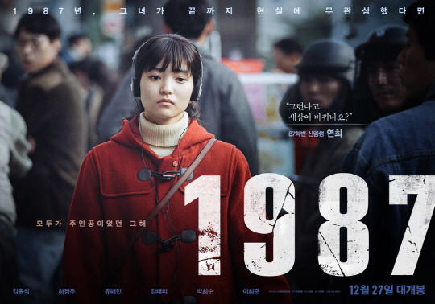

The Movies


Movie Release
1987년 6월 항쟁의 기폭제가 된 박종철 고문치사 사건을 둘러싸고 진실을 은폐하려는 세력과 목숨을 걸고 진실을 알리려는 사람들의 이야기를 다룬 군상극 영화. 당시 사건을 은폐하려던 상부 지시를 무시하고 법대로 부검을 강행한 최환 부장검사, 영등포 교도소에서 복역 중이던 전직 기자이자 민주화운동가인 이부영이 옆방에 수감된 고문 경찰관들을 통해 사건의 진실을 알게 된 뒤 친한 교도관을 통해 천주교정의구현전국사제단에 전달하여 폭로하게 된 실제 사건을 소재로 하고 있다.
Synopsys
“책상을 탁! 치니 억! 하고 죽었습니다”1987년 1월, 경찰 조사를 받던 22살 대학생이 사망한다.
증거인멸을 위해 박 처장(김윤석)의 주도 하에 경찰은 시신 화장을 요청하지만, 사망 당일 당직이었던 최 검사(하정우)는 이를 거부하고 부검을 밀어붙인다.
단순 쇼크사인 것처럼 거짓 발표를 이어가는 경찰. 그러나 현장에 남은 흔적들과 부검 소견은 고문에 의한 사망을 가리키고, 사건을 취재하던 윤 기자(이희준)는 ‘물고문 도중 질식사’를 보도한다. 이에 박 처장은 조 반장(박희순) 등 형사 둘만 구속시키며 사건을 축소하려 한다.
한편, 교도소에 수감된 조 반장을 통해 사건의 진상을 알게 된 교도관 한병용(유해진)은 이 사실을 수배 중인 재야인사에게 전달하기 위해 조카인 연희(김태리)에게 위험한 부탁을 하게 되는데…
한 사람이 죽고, 모든 것이 변화하기 시작했다.
모두가 뜨거웠던 1987년의 이야기.